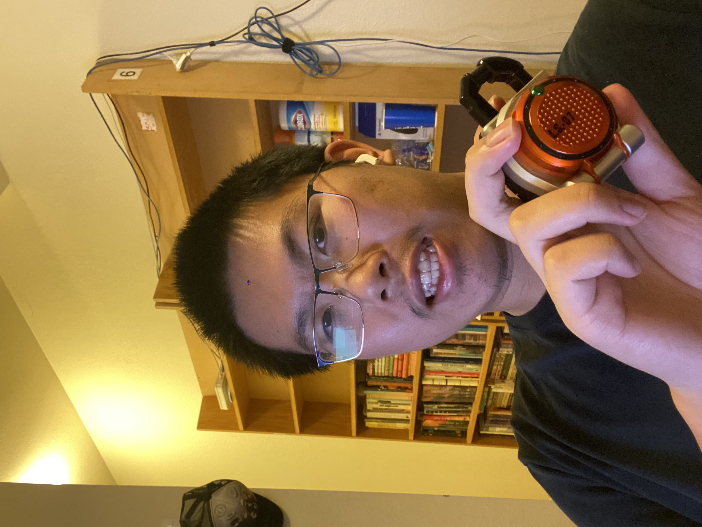

William Chen's Homepage

About Me
It's me, William Chen. I use he/him pronouns, and I'm currently a 4th year CS:GD student. Big fan of games, anime, manga,
and Tokusatsu(specifically Kamen Rider and Ultraman). My favorite game series are Kingdom Hearts, the Persona series, Final Fantasy
and the Devil May Cry series. Currently however, I am way too deep into Genshin Impact and Honkai Star Rail.